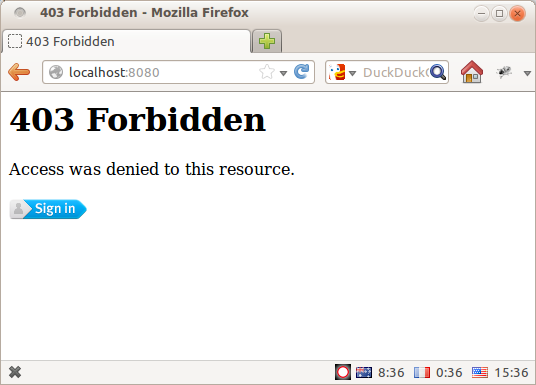

Mozilla Persona went into beta release last week, and it has been very exciting to see the interest and positive press it has generated. I particularly liked the release of pyramid_persona and the accompanying article Quick authentication on pyramid with persona – it is cleaner, simpler, and more feature-full than my attempt at Pyramid/BrowserID integration from last year. Great stuff!
But there is one weak point to using Persona for authentication: it makes automated access difficult. The login flow depends heavily on javascript and assumes that authentication will involve a real live user and a full-blown web-browser. Scripting access to your site via something like requests would be tricky at best, and downright impossible in the general case.
Most of the services we build at Mozilla Services are meant for machines, not people, so we've had to tackle this problem head-on. We have found that a combined authentication approach works very nicely – we provide Persona for live users, and the much more automation-friendly MAC Access Authentication for machines.
In this post I'll show you how easy it can be to combine the two, using pyramid_persona and pyramid_macauth for the heavy lifting, and pyramid_multiauth to tie them both together.
{% endmark %}To begin, let's take a very silly example service that you might build with pyramid. It's authenticated using Mozilla Persona, and you can log in to generate a lucky number. Using pyramid_persona makes this a breeze:
{% syntax python %}import random import wsgiref.simple_server from pyramid.config import Configurator from pyramid.response import Response from pyramid.security import authenticated_userid from pyramid.exceptions import Forbidden TEMPLATE = """ Hello {userid}! Your lucky number for today is {number}. """ def lucky_number(request): """Pyramid view to generate a lucky number.""" # Check that the user is authenticated. userid = authenticated_userid(request) if userid is None: raise Forbidden() # Generate and return the lucky numbe. number = random.randint(1,100) return Response(TEMPLATE.format(**locals()), content_type="text/plain") def main(): """Construct and return a WSGI app for the luckynumber service.""" settings = { # The pyramid_persona plugin needs as master secret to use for # signing login cookies, and the expected hostname of your website # to prevent fradulent login attempts. "persona.secret": "TED KOPPEL IS A ROBOT", "persona.audiences": "localhost:8080", } config = Configurator(settings=settings) config.add_route("number", "/") config.add_view(lucky_number, route_name="number") # Including pyramid_persona magically enables authentication. config.include("pyramid_persona") return config.make_wsgi_app() if __name__ == "__main__": app = main() server = wsgiref.simple_server.make_server("", 8080, app) server.serve_forever() {% endsyntax %}Full runnable source-code is here: luckynum_server_orig.py. Run it as a script and you'll get a delightful little webpage that asks you to login with persona:
Click through the slick Persona login flow and you'll get your luck number!
But let's say you're a junkie for this stuff (or a compulsive gambler...) and you want to write a script to fetch your lucky number on a regular basis. Using just the Persona authentication API, you're out of luck it's entirely javascript-driven so there is no easy way to automate that login.
You could script something against the persona.org web-service API, but that's an internal implementation detail that might change without notice. You could drive a full-blown browser using something like Selenium or Sikuli, but that's pretty fragile and not exactly user-friendly. It would be better if the web service itself support a machine-drivable authentication mechanism in addition Persona.
Enter MAC Access Authentication.
MAC Access Auth is a simple request-signing scheme, originally designed as part of OAuth 2 but eminently usable as a stand-alone specification. Each client gets a unique id and secret key, which are roughly analogous to a username and password. Authentication is performed by constructing a HMAC signature of the request using the secret key, and including it in the Authorization header:
GET /protected_resource HTTP/1.1
Host: example.com
Authorization: MAC id="h480djs93hd8",
ts="1336363200",
nonce="dj83hs9s",
mac="bhCQXTVyfj5cmA9uKkPFx1zeOXM="
Note that the secret key itself is not included in the request. Instead, the server authenticates the request by looking up its own copy of the secret key, and checking that the "mac" signature from the request was correctly generated using that key.
If you know about HTTP Digest Auth then this should look familiar but more secure. If you've ever had the misfortune of dealing with Two-Legged OAuth, MAC Access Auth will be a breath of fresh air.
To add MACAuth support into our lucky-number service, we can use the pyramid_macauth library.
The real trick, however, is providing both Persona and MACAuth support in a convenient manner. The pyramid_multiauth plugin makes this simple – it lets you configure multiple pyramid authentication policies, arranged in a stack, and delegate authentication duties to each of them in turn.
Here's how it would look in code:
{% syntax python %}def main(): """Construct and return a WSGI app for the luckynumber service.""" settings = { # The pyramid_persona plugin needs as master secret to use for # signing login cookies, and the expected hostname of your website # to prevent fradulent login attempts. "persona.secret": "TED KOPPEL IS A ROBOT", "persona.audiences": "localhost:8080", # The pyramid_macauth plugin needs a master secret to use for signing # its access tokens. We could use the same secret as above, but it's # generally a good idea to use different secrets for different things. "macauth.master_secret": "V8 JUICE IS 1/8TH GASOLINE", # The pyramid_multiauth plugin needs to be told what sub-policies to # load, and the order in which they should be tried. "multiauth.policies": "pyramid_persona pyramid_macauth", } config = Configurator(settings=settings) config.add_route("number", "/") config.add_view(lucky_number, route_name="number") # Including pyramid_multiauth magically enables authentication, loading # both of the policies we specified in the settings. config.include("pyramid_multiauth") # Both of our chosen policies configure a "forbidden view" to handle # unauthenticated access. We have to resolve this conflict by explicitly # picking which one we want to use. config.add_forbidden_view("pyramid_persona.views.forbidden") return config.make_wsgi_app() {% endsyntax %}This configures our pyramid app to accept authentication either interactively via the persona dialog, or automatically using a set of MACAuth credentials.
But, how do we get a set of MACAuth credentials in the first place? We will need to define another view to the application, where a user can login with Persona and generate a fresh set of credentials:
{% syntax python %}def provision_creds(request): """Pyramid view to provision MACAuth credentials.""" # Check that the user is authenticated. userid = authenticated_userid(request) if userid is None: raise Forbidden() # Get a reference to the MACAuthenticationPolicy plugin. policy = request.registry.getUtility(IAuthenticationPolicy) policy = policy.get_policy(MACAuthenticationPolicy) # Generate a new id and secret key for the current user. id, key = policy.encode_mac_id(request, userid) return {"id": id, "key": key} {% endsyntax %}And hook it up in the configurator:
{% syntax python %} config.add_route("provision", "/provision") config.add_view(provision_creds, route_name="provision", renderer="json") {% endsyntax %}Full runnable source-code is here: luckynum_server.py. Run it as a script and, in addition to the luck-number-generating page from before, you will be able to access "/provision" and obtain some MACAuth credentials for your account:

We can now use the requests library to script up an automated client for this service, along with the macauthlib
package for constructing the request signatures. {% syntax python %}import requests import macauthlib # A set or previously-provisioned MACAuth credentials. CREDENTIALS = { "id": "eyJzYWx0IjogImNlMWM4YyIsICJleHBpcmVzIjogMTM0OTM5NDQ2My43OTIyOTUs" "ICJ1c2VyaWQiOiAicnlhbkByZmsuaWQuYXUifWyyOtRhUCI9D4I9Oz0Tho7f4-FK", "key": "DqvXadiE3QRySMRLnkGT5EmSvPw=" } # Create a requests session with a hook to sign all outgoing requests. # The macauthlib package has native support for request's data types. def auth_hook(req): macauthlib.sign_request(req, **CREDENTIALS) return req session = requests.session(hooks={"pre_request": auth_hook}) # Then we can easily script access to the service. print session.get("http://localhost:8080/").content {% endsyntax %}Full runnable source-code is here: luckynum_client.py. If you fill in your own set of credentials and run it against the server, you should see something like this:

And that's the basics. You can do a lot more, like tweaking expiration time of credentals. It's great, check it out.